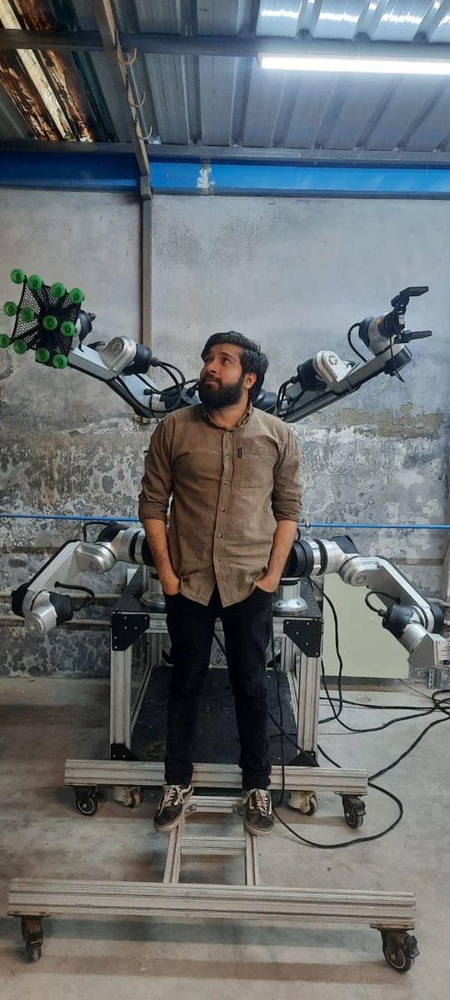

Industry work: MyActuator and Orangewood Labs
MyActuator, China — 2024 to 2025
At MyActuator I was lead robotics software engineer on a humanoid. I led the ROS 2 architecture and the manipulation planning: OMPL constrained planning on depth-camera point clouds, KDL Cartesian trajectories, IK and Jacobian mapping from task space to joint space, and real-time human-to-robot upper-body motion retargeting from camera-based skeletal tracking.
The planning and architecture work itself is not public; the planning structure is rebuilt in the open in pointcloud-constrained-planning.
Orangewood Labs, Delhi — 2022 to 2024

At Orangewood Labs I designed and shipped two controllers on 30 production 6-axis arms: a gravity-compensation hand-guiding controller (inverse dynamics to joint torques) and a Jacobian-IK TCP jogging controller. Both stayed in service until the next hardware generation. I also built the joint-space trajectory-tracking controller that runs underneath them, and the OPC-UA bridge between the robot controller and the Siemens PLC/HMI.
What each controller does, and where the same structure is built in the open:
- Gravity-compensation hand guiding. The controller computes, from the arm's dynamic model, the joint torques that hold the arm against gravity, so a person can move it by hand and it stays where it is left. Public rebuild: the hand-guiding controller in ur5e-teaching-controllers.
- Jacobian-IK TCP jogging. A commanded tool velocity from the pendant or HMI is mapped to joint velocities through the Jacobian, with damping near singularities. Public rebuild: the jogging controller in ur5e-teaching-controllers.
- Joint-space trajectory tracking. The loop that executes programmed motions underneath both. Public rebuild: the tracking controllers in ur5e-teaching-controllers.
- OPC-UA bridge. Exposes the robot controller's I/O and modes to a Siemens PLC and HMI over OPC-UA. No public rebuild.
Orangewood's own media: